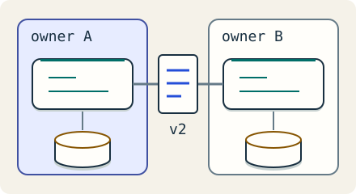

Lead the design · 7 minutes
Designs that other teams must live with
A boundary is a contract and an operating responsibility, not just a box.
Open this lesson
A shared API changes under three teams
Your team renames a response field. The website updates, but a billing job and an old mobile client fail overnight. The data shape was an informal contract even though nobody wrote it down. A design crosses team boundaries whenever another team must depend on its behavior, availability or change schedule.
Put authority with an owner
Change a required API field and watch consumer contracts break. Keep v1, let measured usage fall as consumers migrate, then choose when to retire it.
Worked example: the on-call bill
An operating model constrains delivery even when the infrastructure bill is small. Combining services does not automatically remove pages; eliminating repeated failure paths or clarifying ownership may help. The last callers in an API migration can include the least observable batch jobs. This is an operating worksheet, not a simulated page count.
Count the operating bill
- 8 pages/week: 4 services × 2 actionable pages each.
- 312 hours/year: 8 × 45 minutes × 52 weeks. Three operators still need delivery time.
- 20 callers remain: 180 of 200 migrated. Identify the last batch jobs before retiring the old API.
Write a document people can disagree with
Start a design document with user promises, non-goals and measured constraints. Show the request path, data owner and invariant, then alternatives, failure cases, cost and open questions. Ask reviewers to challenge one decision. Prefer additive changes and explicit versions for incompatible meaning. Publish deprecation dates, contact consumers and agree exception policies. A quiet dashboard cannot prove that an annual caller has migrated.
A contract needs evidence
- Publish the meaning: Fields, errors, freshness, deletion and compatibility need explicit semantics.
- Observe actual consumers: Instrument caller identities. An annual job may be absent from a quiet dashboard.
- Retire with agreement: Offer migration paths, contact owners and test old clients before removal.
Key numbers
- Page load
- ≈ 6 hours/week. 4 services × 2 pages × 45 minutes
- Annual response time
- ≈ 312 hours. 6 hours/week × 52; excludes preventive work
- Remaining callers
- 20. 200 - 180; risk depends on which callers remain
Check your reasoning
Think through these questions before opening the lesson. In the game you can test the idea and compare your reasoning.
- Three teams write one table and each assumes another owns recovery. What must their contract establish?
- Where would you split this service? Follow-up: another team needs to change independently.
- Ninety percent of callers migrated to a new API. What evidence supports removing the old endpoint?
- How will you deprecate an API used by teams you do not know? Follow-up: one annual caller never appears in the last month's logs.
- Two actions share a required local transaction invariant and one operating team. What is a reasonable initial boundary?
The key point
Name the invariant, the owner and the compatibility promise before drawing a team boundary.
Practise this idea
- Medium
Notification service
Every other team asks you to send messages: order shipped, new login, a sale starting. You send them by push, email and text through outside providers who have their own limits. Send each message once, and never block the team that asked.
- Medium
Patient health records
A hospital network keeps patient charts, orders, notes and scanned documents for 40 hospitals. Doctors need a chart in under a second, no saved note may be lost when a server or a building fails (in a whole-region disaster, at most the last minute of edits may need re-entering from the ward), and an auditor can walk in any day and ask you to prove who looked at what.
- Hard
Email service
Mail arrives from the whole internet, including a lot of spam, and must land in the right inbox. People open, search, send and attach. Never lose a message, and keep search fast even over years of mail.
- Medium
CI/CD build system
Every time a developer saves code to the shared repository, you build and test it. Thousands of developers do this all day, and release day brings a rush. Builds must start quickly, but idle build machines cost real money.